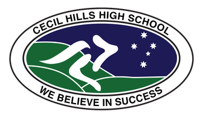

01 / DGVN
PROFIL
Eine internationale Perspektive - mit Bodenhaftung.

GLOBAL MINDSET
LOCAL IMPACT
02 / MARIENAU
ECO-Stipendium
Abitur, Gemeinschaft und Verantwortung seit 2026.03 / AUSTRALIEN
Globaler Blick
Akademisches Jahr in New South Wales · Englisch C1.04 / MEDIEN
Storytelling
Film, visuelle Kommunikation und ein ausgezeichneter Dokumentarfilm.05 / LEADERSHIP
Verantwortung
Klassensprecher · Ideen organisieren · Menschen verbinden.06 / HALTUNG
Glaube & Ausdauer
Katholisch · getauft & gefirmt · Freude am Laufen.Ich verbinde akademische Ambition, internationale Perspektiven und die Bereitschaft, konkret anzupacken.
Internat Marienau
Niedersachsen, Deutschland
ECO-STIPENDIUM · SEIT 08 / 2026
Ein Ort für Haltung,
Verantwortung und Zukunft.
Am Internat Marienau arbeite ich auf das Abitur hin - getragen von der Förderung durch das ECO-Stipendium des Trägervereins Marienau. Die Gemeinschaft gibt Raum, Verantwortung zu übernehmen und eigene Perspektiven einzubringen.
20262028Abitur voraussichtlich
“Bildung öffnet Räume. Verantwortung gibt ihnen Richtung.
Seraphin Scherer · Leitgedanke
ARBEIT & NETZWERK
Ideen teilen.
Kontakte stärken.
AUSGEWÄHLTE IMPULSE
Aus Geschichte wird eine Geschichte.
Eine filmische Spurensuche zur Hutmachergeschichte Lindenbergs - von der ersten Recherche bis zum fertigen Dokumentarfilm. Ausgezeichnet im Landeswettbewerb Erinnerungszeichen.
Digitale Bildung
Medienführerschein und Tutorial für jüngere Jahrgänge.
Internationale Erfahrung
Schuljahr in Australien · Zusammenarbeit über Grenzen hinweg.
“Netzwerke werden wertvoll, wenn Ideen im Gespräch weiterwachsen.” — Seraphin Scherer
09:41
Seraphin SchererConnect / Follow
Let’s connect.
LinkedInProfil-Link einsetzen↗ InstagramProfil-Link einsetzen↗Persönlich. International. Im Austausch.
WEG & ENGAGEMENT
Erfahrungen, die mich prägen.
-
SEIT 08 / 2026
Internat Marienau
Abitur · Stipendiat des Trägervereins Marienau · Klassensprecher.
-
SEIT 2026
Freie Demokraten
Mitglied der FDP mit Interesse an liberalen Werten, politischer Gestaltung und öffentlichem Diskurs.
 Mitglied seit 2026 ↗
Mitglied seit 2026 ↗ -
2025 - 2026
Cecil Hills High School, Australien
Akademisches Auslandsjahr in New South Wales - Lernen, leben und mit neuen Perspektiven zurückkehren.

Schule besuchen ↗ -
2023 - HEUTE
Gesellschaftliches Engagement
Organisation, Moderation und technische Unterstützung in der lokalen Gemeinschaft; zuvor Schülervertretung und Integrationsarbeit.
-
2019 - 2025
Gymnasium Lindenberg
Schulweg mit individueller Lernzeitverkürzung, kreativen Projekten und wachsendem Interesse an Wirtschaft und Gesellschaft.
Was mich antreibt: Verantwortung nicht nur zu übernehmen, sondern sinnvoll zu gestalten.